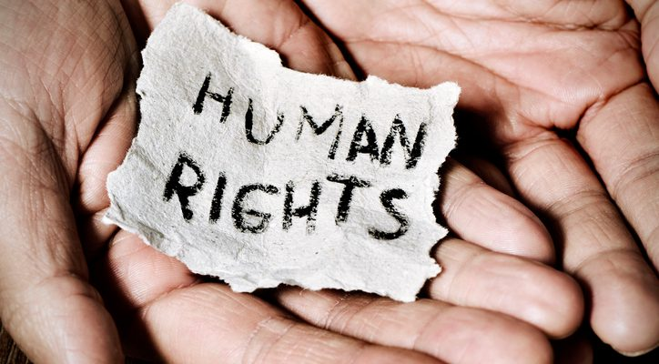
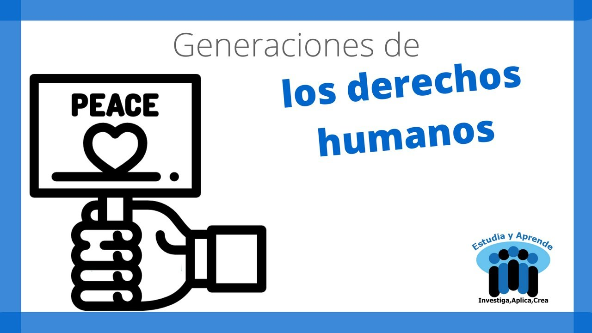

Los derechos humanos han sido clasificados de diversas maneras, de acuerdo con su naturaleza, origen, contenido y por la materia que refiere.
La denominada “Tres Generaciones” es de carácter histórico y considera cronológicamente su aparición o reconocimiento por parte del orden jurídico normativo de cada país.

Primera generación.
Se refiere a los derechos civiles y políticos. Fueron los primeros que exigió y formuló el pueblo en la Asamblea Nacional durante la Revolución francesa. Este primer grupo lo constituyen los reclamos que motivaron los principales movimientos revolucionarios en diversas partes del mundo a finales del siglo XVIII.
Como resultado de esas luchas, esas exigencias fueron consagradas como auténticos derechos y difundidos internacionalmente, entre los cuales figuran:
- Toda persona tiene derechos y libertades fundamentales sin distinción de raza, color, idioma, posición social o económica.
- Todo individuo tiene derecho a la vida, a la libertad y a la seguridad jurídica.
- Los hombres y las mujeres poseen iguales derechos.
- Nadie estará sometido a esclavitud o servidumbre.
- Nadie será sometido a torturas ni a penas o tratos crueles, inhumanos o degradantes, ni se le podrá ocasionar daño físico, psíquico o moral.
- Nadie puede ser molestado arbitrariamente en su vida privada, familiar, domicilio o correspondencia, ni sufrir ataques a su honra o reputación.
- Toda persona tiene derecho a circular libremente y a elegir su residencia.
- Toda persona tiene derecho a una nacionalidad.
- En caso de persecución política, toda persona tiene derecho a buscar asilo y a disfrutar de él, en cualquier país.
- Toda persona tiene derecho a casarse y a decidir el número de hijos que desea.
- Todo individuo tiene derecho a la libertad de pensamiento y de religión.
- Todo individuo tiene derecho a la libertad de opinión y expresión de ideas.
- Toda persona tiene derecho a la libertad de reunión y de asociación pacífica.
Segunda generación.

La constituyen los derechos económicos, sociales y culturales, debido a los cuales, el Estado de Derecho pasa a una etapa superior, es decir, a un Estado Social de Derecho.
De ahí, el surgimiento del constitucionalismo social que enfrenta la exigencia de que los derechos sociales y económicos, descritos en las normas constitucionales, sean realmente accesibles y disfrutables. Se demanda un Estado de Bienestar que implemente acciones, programas y estrategias, a fin de lograr que las personas los gocen de manera efectiva, y son:
- Toda persona tiene derecho a la seguridad social y a obtener la satisfacción de los derechos económicos, sociales y culturales.
- Toda persona tiene derecho al trabajo en condiciones equitativas y satisfactorias.
- Toda persona tiene derecho a formar sindicatos para la defensa de sus intereses.
- Toda persona tiene derecho a un nivel de vida adecuado que le asegure a ella y a su familia la salud, alimentación, vestido, vivienda, asistencia médica y los servicios sociales necesarios.
- Toda persona tiene derecho a la salud física y mental.
- Durante la maternidad y la infancia toda persona tiene derecho a cuidados y asistencia especiales.
- Toda persona tiene derecho a la educación en sus diversas modalidades.
- La educación primaria y secundaria es obligatoria y gratuita.
Tercera generación.
Este grupo fue promovido a partir de la década de los setenta para incentivar el progreso social y elevar el nivel de vida de todos los pueblos, en un marco de respeto y colaboración mutua entre las distintas naciones de la comunidad internacional. Entre otros, destacan los relacionados con:
- La autodeterminación.
- La independencia económica y política.
- La identidad nacional y cultural.
- La paz.
- La coexistencia pacífica.
- El entendimiento y confianza.
- La cooperación internacional y regional.
- La justicia internacional.
- El uso de los avances de las ciencias y la tecnología.
- La solución de los problemas alimenticios, demográficos, educativos y ecológicos.
- El medio ambiente.
- El patrimonio común de la humanidad.
- El desarrollo que permita una vida digna.
¿Hay alguna jerarquía entre los derechos humanos?
No. Todos los derechos humanos tienen la misma importancia.
La Declaración Universal de Derechos Humanos, deja claro que todos los derechos humanos, ya sean económicos, políticos, civiles, culturales o sociales, tienen igual validez e importancia.
¿Las personas tienen obligaciones en materia de derechos humanos además de los estados?
Sí. También las personas pueden ser sujetas de obligaciones en materia de derechos humanos, las organizaciones internacionales y otros agentes no pertenecientes al Estado.
Las personas en lo individual, tienen responsabilidades generales para con la comunidad y deben respetar los derechos humanos de los demás.
Ir arriba|
Volver a la página principal